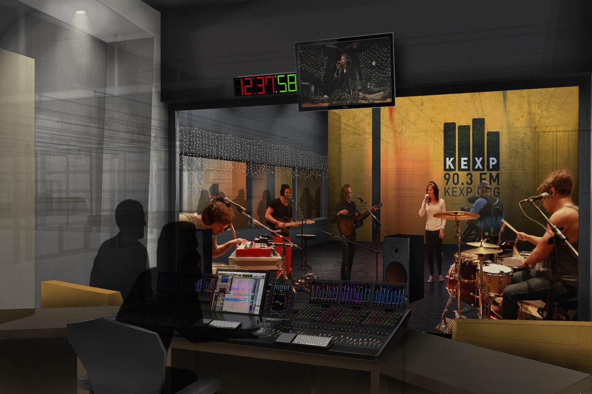
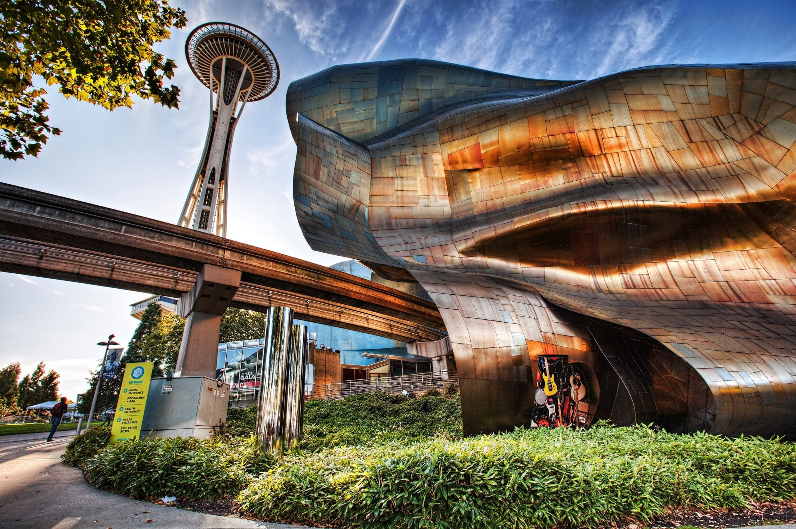
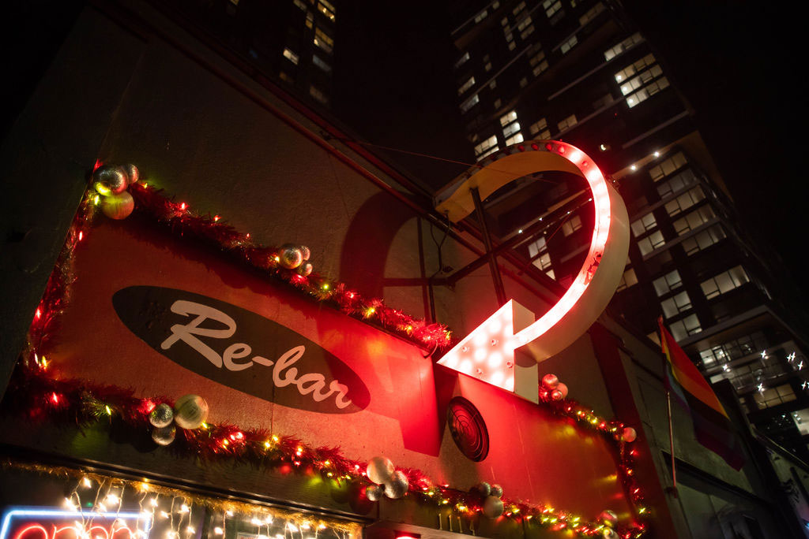
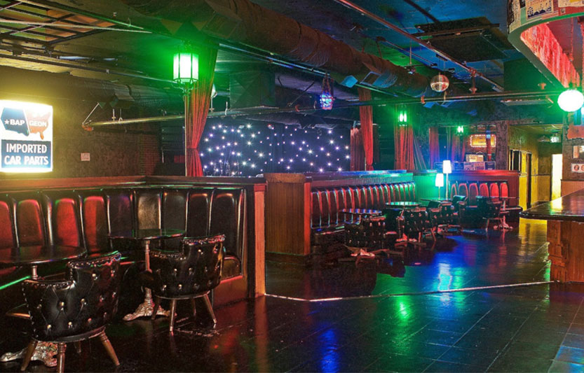
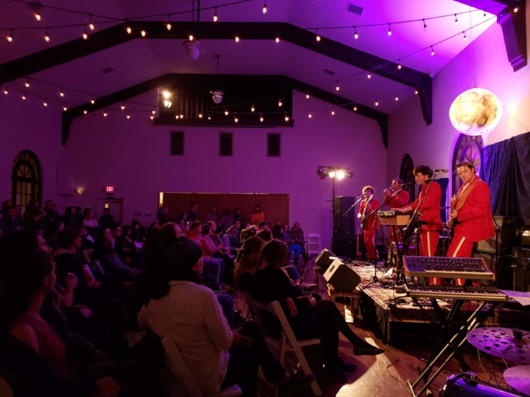
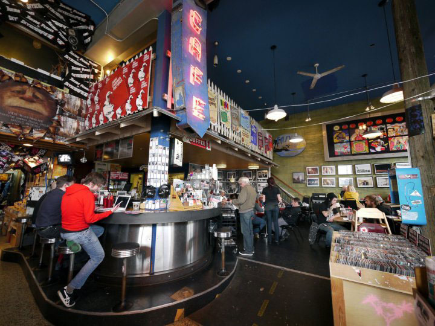

Below are images of some important places in the Seattle music scene!
|  |  |  |
KEXP Studios |
MoPOP |
Re-bar |
| KEXP is located in the Seattle Center, and is a wealth of music info. | MoPOP is right next door to KEXP, and hosts exhibits about key Seattle musicians from Nirvana to Jimi Hendrix. | Re-bar, located in Capitol Hill, was the site of Nirvana's Nevermind release party - which the band members themselves were kicked out of! |
|  |  |  |
KEXP Studios |
MoPOP |
Re-bar |
| Chop Suey is an iconic venue with a small space that lends to intimate concerts. | The Freemont Abbey is a wonderful volunteer-run space for concerts, poetry slams, and comedy alike. | Easy Street Records is one of the most memorable Seattle record stores. Pearl Jam even released an album of their performances there: Live at Easy Street. |